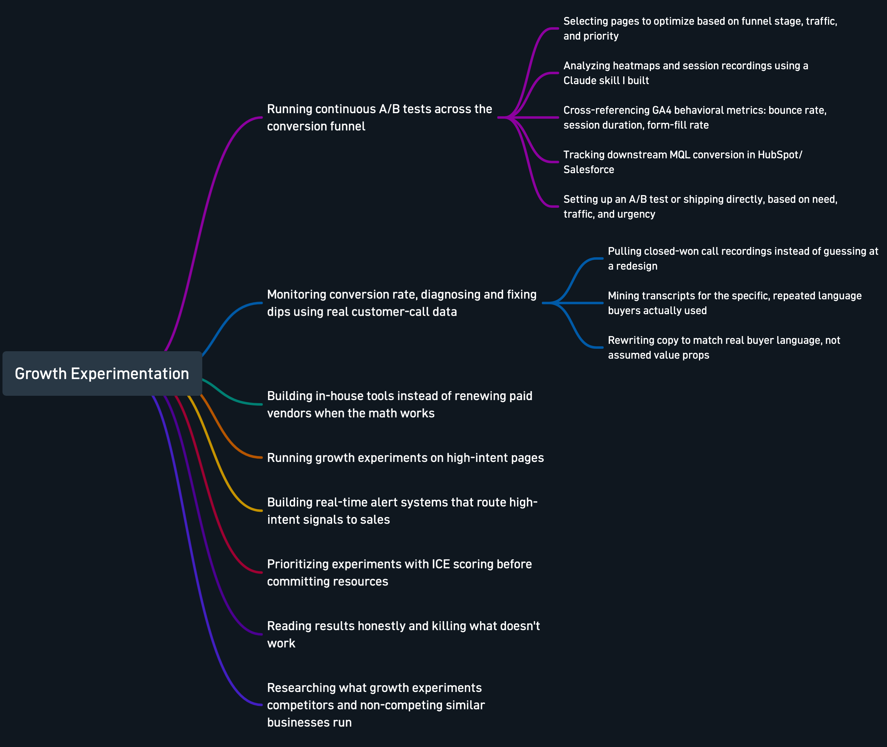
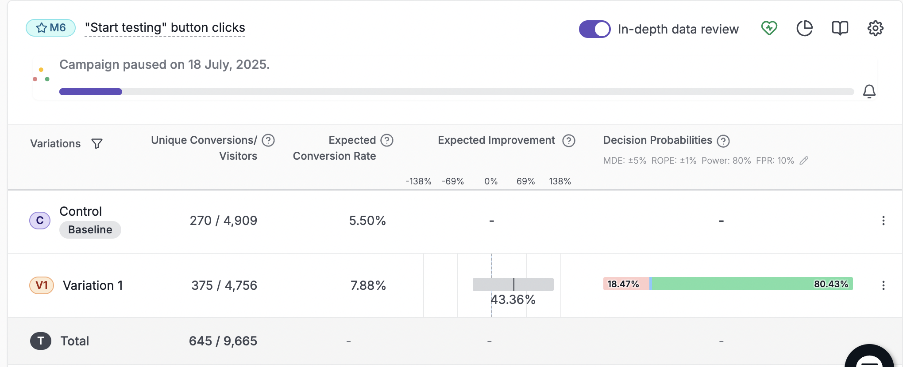
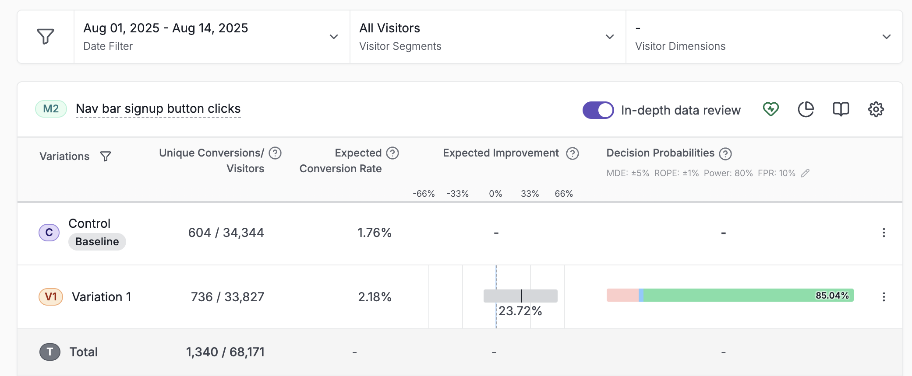
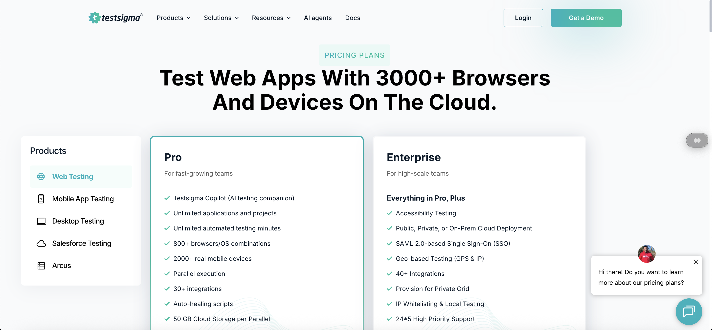
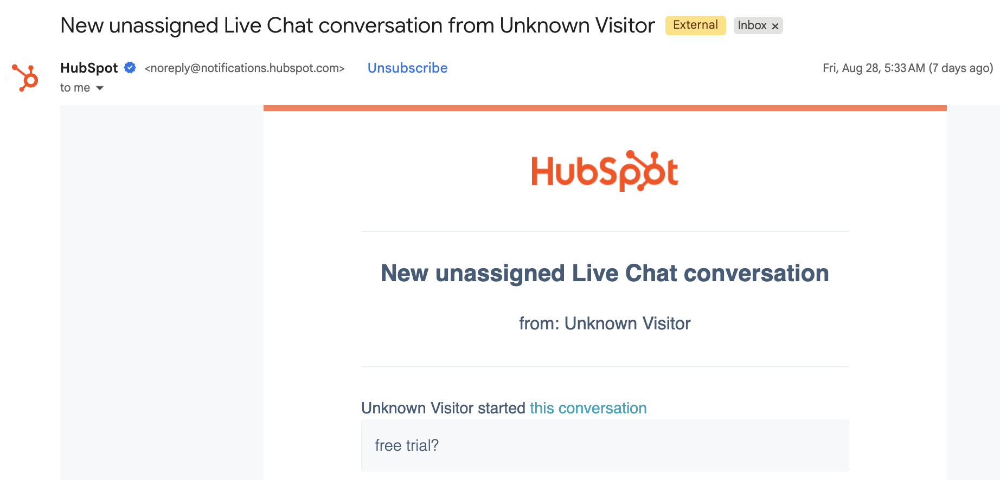
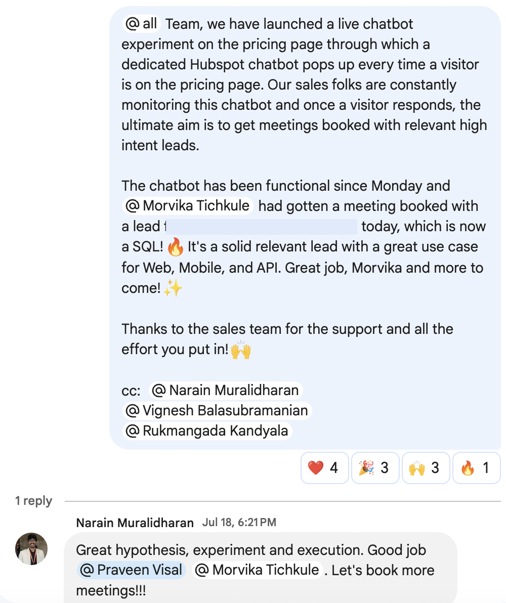

When an AI-led redesign backfired, and AI fixed it.

The page today: the hero section that came out of this fix.
The setup
Early in an experimentation cycle, we rolled out an AI-assisted redesign of the hero section on our core product testing pages: new copy, new layout, generated and refined quickly using AI tooling. It felt like a clear improvement on paper.
The problem
It wasn't. Conversion rate dropped after the change went live. Not a rounding error. A real, visible dip on pages that mattered.
The easy response would have been to guess at a second redesign, or just revert and call it a wash. Neither felt right. A worse hero section usually means a specific mismatch between what the page says and what the visitor actually needs to hear, not a generically "bad" page.
The diagnosis
Instead of guessing, I used Gong and Attive to analyze call recordings from customers who'd actually closed, mining the transcripts for the recurring, product-specific pain points they described in their own words before they bought. That's a different exercise than asking "what do we think matters to buyers"; it's asking "what did buyers who actually converted say mattered to them."
Doing this manually (listening back through a month of closed-won calls, tagging themes, finding the patterns) would have taken hours. The AI-assisted pass took minutes, which meant the fix shipped fast enough to matter.
The fix
I rewrote the hero copy to speak directly to the pain points the call data surfaced, replacing generic value language with the actual words and priorities real buyers had used when explaining why they bought.
The result
Conversion recovered and landed meaningfully above where it had been before the AI redesign that caused the dip in the first place: more than a 2x lift in MQL conversion on the pages involved.
More from the same program
This wasn't a one-off. It's representative of how I run growth work generally: treat every result as a hypothesis to test, not a decision to defend. Across the full year, the same program grew overall website conversion 3x and MQL conversion nearly 4x through continuous testing across the funnel. The fix above is a single example of that broader work. Here's the actual process behind it, the same one regardless of which company I'm doing it at.
Click to see it full size.

Three of those moments, in more detail:
A CTA that kept winning, twice
Swapped the homepage's generic "Try for Free" CTA for something specific to what the product actually does: "Start testing." Ran it as an A/B test in VWO. The variant lifted button clicks from 5.50% to 7.88%, with an 80%+ probability of beating control, enough to call and pause the test.
Took the same CTA and applied it to the nav bar's signup button next, based on what the first test showed. Same direction, smaller lift on a much bigger sample: 1.76% to 2.18%, 85% probability of beating control.

The homepage test: "Start testing" vs. the default CTA.

Same CTA, re-tested on the nav bar signup button, based on the first test's learning.
Exit-intent, replaced in-house
Replaced a paid exit-intent tool with a self-built version, cutting ~$1,440/year in subscription costs and turning an otherwise-lost segment of visitors into $1M+ in qualified pipeline.

The popup, the day it shipped, with the actual monthly cost of the tool it replaced.
Live chat on bottom-of-funnel pages
Launched a BDR-staffed live chat experiment on bottom-of-funnel pages that generated $170K in pipeline on its own. A dedicated HubSpot chatbot triggers on each bottom-of-the-funnel page itself, and every response routes straight to sales as a real-time alert.

Live chat showing up on the pricing page

Email notification about a new chat reaching the sales team in real-time

The experiment's first booked meeting, called out the same week it launched.